Bilim, bilinmeyene atılan en cesur sorudur; ilerleme ise o sorudan vazgeçmemektir.
Bilim, bilinmeyene atılan en cesur sorudur; ilerleme ise o sorudan vazgeçmemektir.
Eleştirel düşünceyi benimseyen, farklı perspektifleri kucaklayan ve toplumsal sorunlara çözüm üreten bir gençlik yetiştirmek.
Bu sene dördüncüsünü gerçekleştireceğimiz Fen Bilimleri Çalıştayımızın amacı, alanında başarılı akademisyenlerin yer aldığı 7 farklı komitede üniversite düzeyindeki ders içeriklerinin lise seviyesine uyarlanarak öğrencilere aktarılması; böylece öğrencilerin bilim sevgisi kazanmaları ve ilgi duydukları alanlar hakkında daha detaylı bilgi edinmelerinin sağlanmasıdır.
Fen Bilimleri Çalıştayı, her liseli gencin katılabildiği, bilimsel konular ışığında Türkiye'nin seçkin üniversitelerinden gelen akademisyenler eşliğinde çalışmaların yapıldığı ve bolca eğlenilen bir etkinliktir. Maltepe Fen Lisesi Fen Bilimleri Çalıştayı olarak gayemiz, her sene okulumuzda düzenlenen bu müthiş etkinliği en güzel şekilde organize etmektir.
Kuantum fiziği, nöropsikoloji, moleküler biyoloji, yapay zekâ ve veri bilimi, doğal dil işleme, uçak ve havacılık teknolojileri, adli bilimler ve akıllı sistemler gibi çok disiplinli komiteleri bünyemizde barındıran bir fen bilimleri çalıştayı olarak; temel bilimlerden uygulamalı mühendisliğe, insan zihninin işleyişinden biyolojik yapıların moleküler düzeyde incelenmesine kadar uzanan geniş bir yelpazede güncel bilimsel gelişmeleri birlikte tartışmayı amaçlıyoruz.
Bu çalıştayda kuantum fiziğinin ileri teknolojilere etkisini, nöropsikoloji ve moleküler biyolojinin sağlık ve davranış bilimlerine katkılarını, yapay zekâ, veri analitiği ve NLP'nin akıllı sistemler ile adli bilimlerdeki kullanım alanlarını ve havacılık teknolojilerindeki yenilikleri bilimsel, etik ve toplumsal boyutlarıyla ele alarak; katılımcıların hem teorik bilgi birikimlerini artırmalarını hem de disiplinler arası etkileşim sayesinde yenilikçi ve bütüncül bakış açıları geliştirmelerini hedefliyoruz.
Her komite kendi oturum salonunda bağımsız ilerler. Kayıt sırasında birinci ve ikinci tercihinizi belirtirsiniz.
Çalıştayın genel akademik çerçevesini belirlemek, bilimsel standartların korunmasını sağlamak ve tüm komiteler arasında eşgüdümü yürütmekle sorumludur.
Komitelerin akademik ve organizasyonel sürecini yürütmek, öğrencileri bilimsel araştırma yöntemleri konusunda yönlendirmekle görevlidir.
Komitelerin akademik ve organizasyonel sürecini yürütmek, çalışmaların belirlenen tema ile amaçlara uygunluğunu sağlamakla görevlidir.
Komitelerin akademik ve organizasyonel sürecini yürütmek, öğrencileri bilimsel araştırma yöntemleri konusunda yönlendirmekle görevlidir.
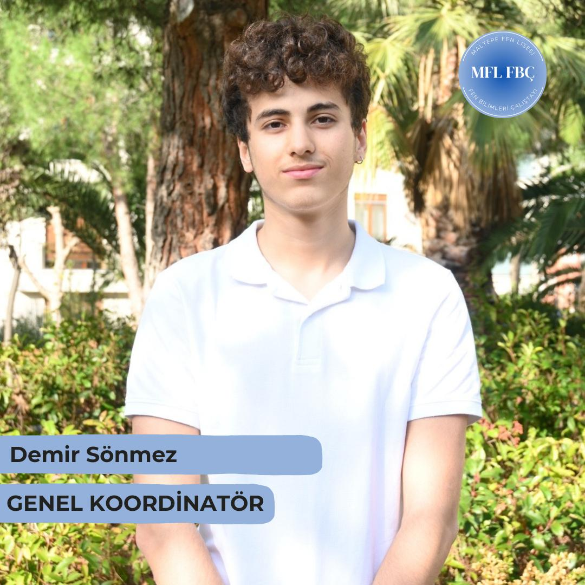
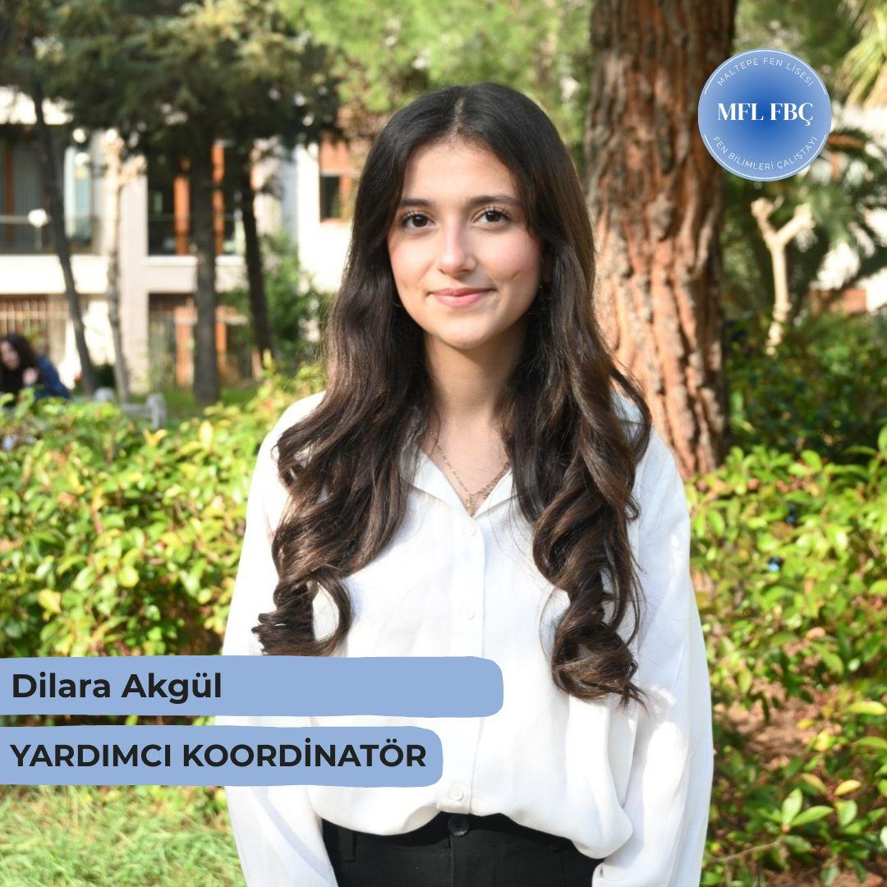
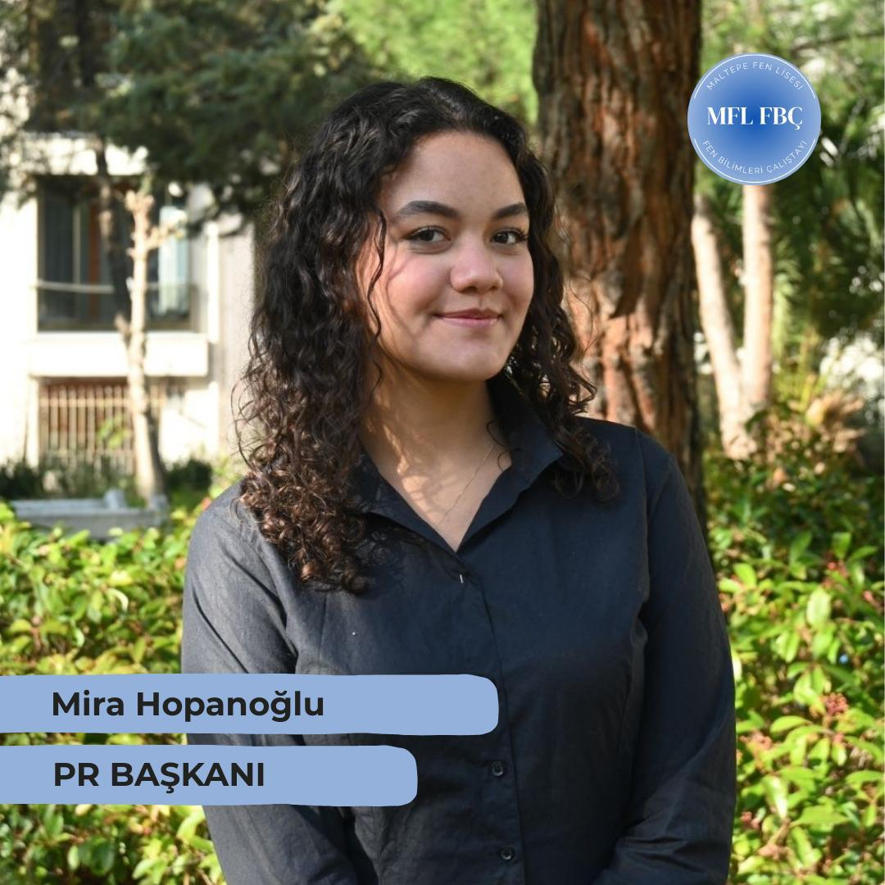
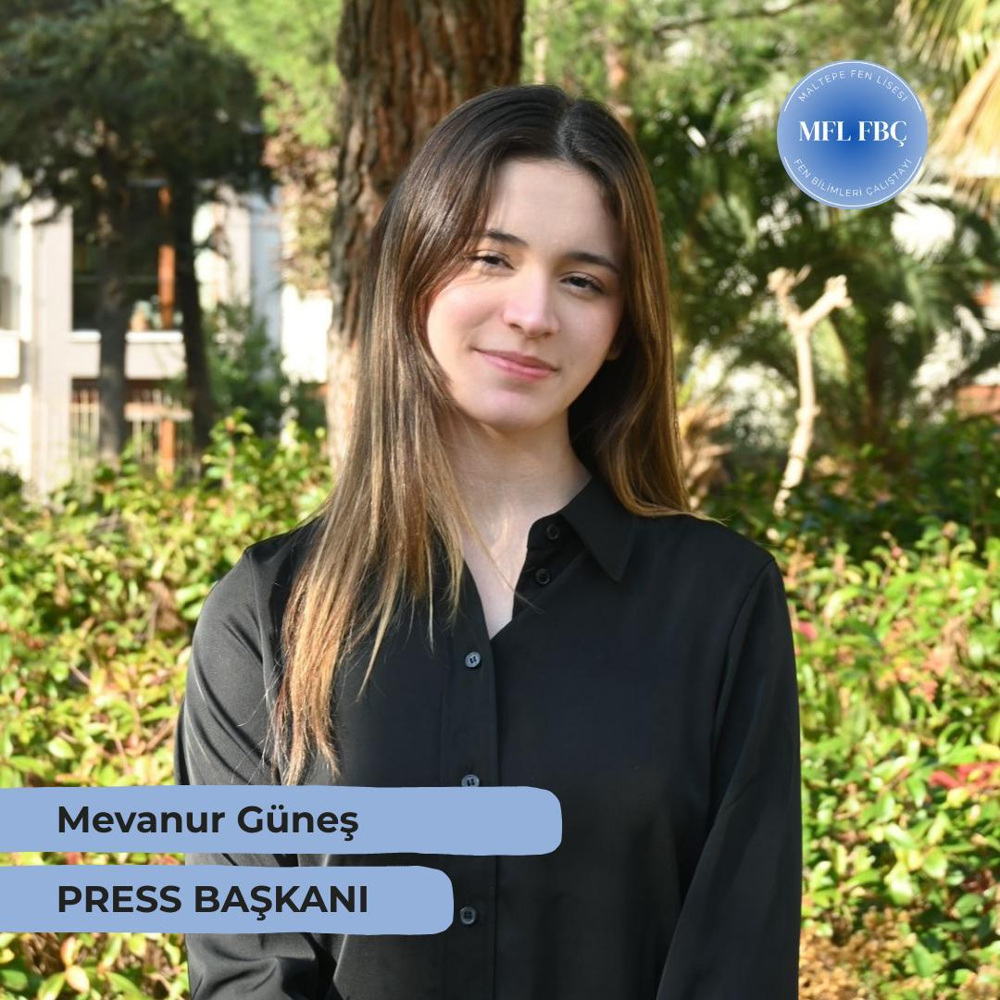
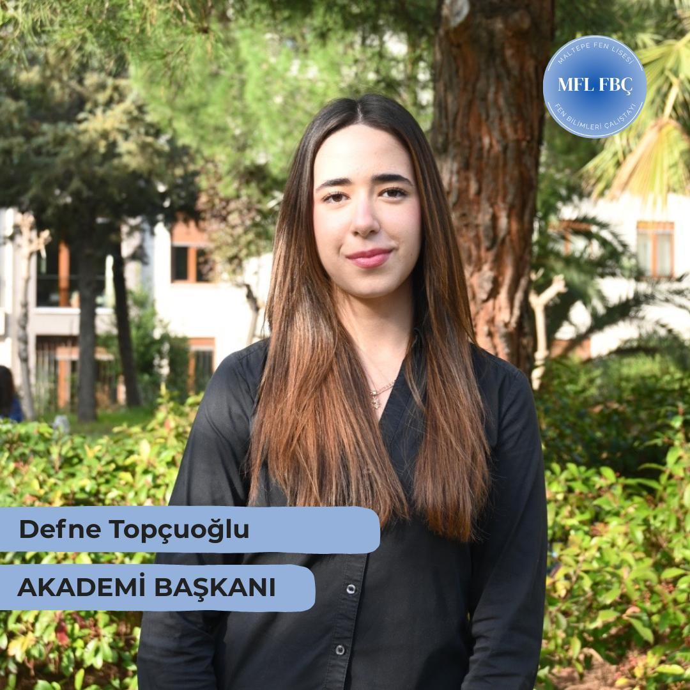
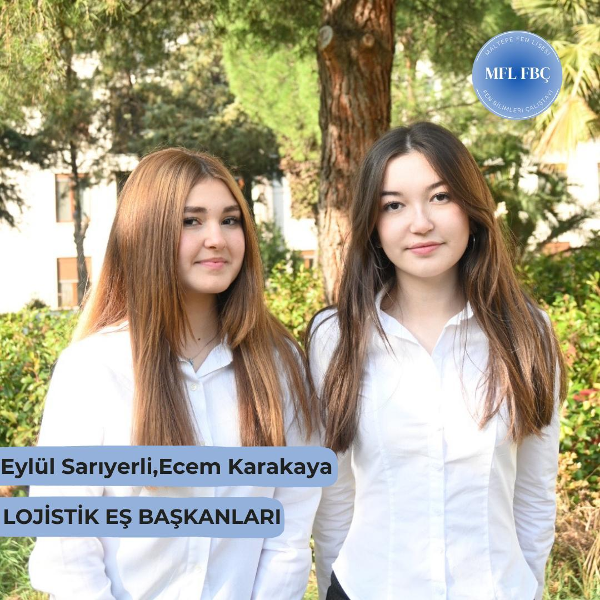
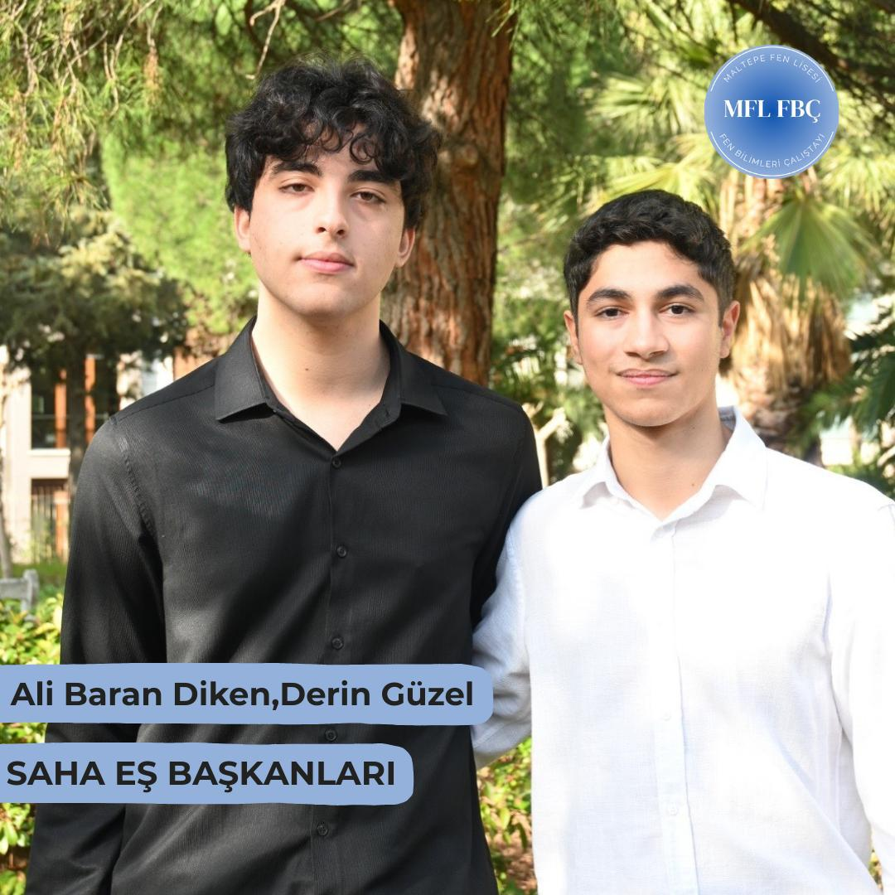
Tüm lise öğrencileri çalıştayımıza katılabilir. Herhangi bir ön koşul veya deneyim şartı bulunmamaktadır.
Katılım ücreti ve ödeme detayları başvuru sürecinde paylaşılacaktır.
Sitemizde yer alan "Başvur" butonuna tıklayarak başvuru formunu doldurabilirsiniz. Başvurular değerlendirildikten sonra sonuçlar e-posta ile bildirilecektir.
Çalıştay, Üsküdar Sağlık Bilimleri Üniversitesi'nde gerçekleşecektir.
Başvuru formunda komite tercihlerinizi belirtebilirsiniz. Tercihleriniz ve kontenjan durumuna göre komite atamanız yapılacaktır.
Çalıştay 9-10 Mayıs 2026 tarihlerinde, 2 gün sürecek şekilde planlanmıştır.
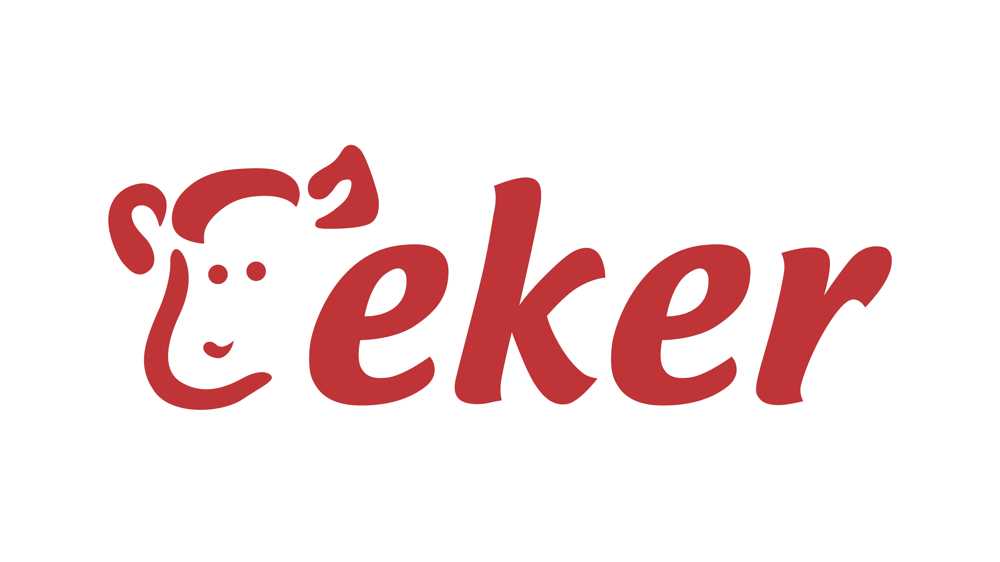
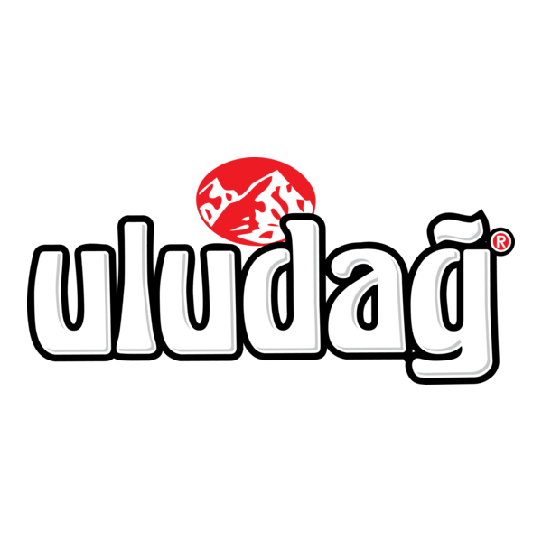
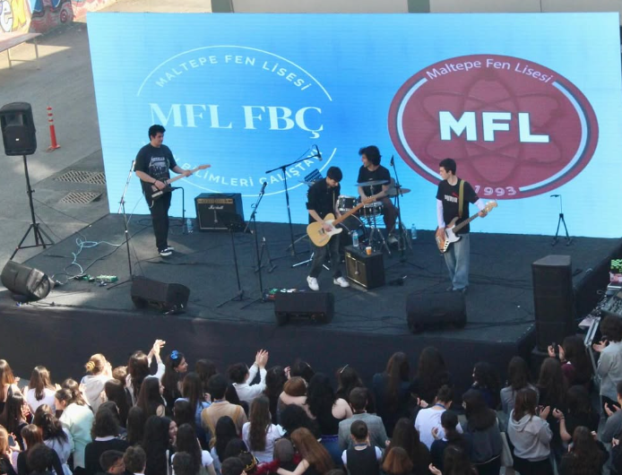
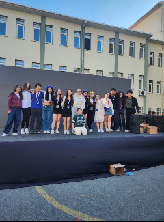
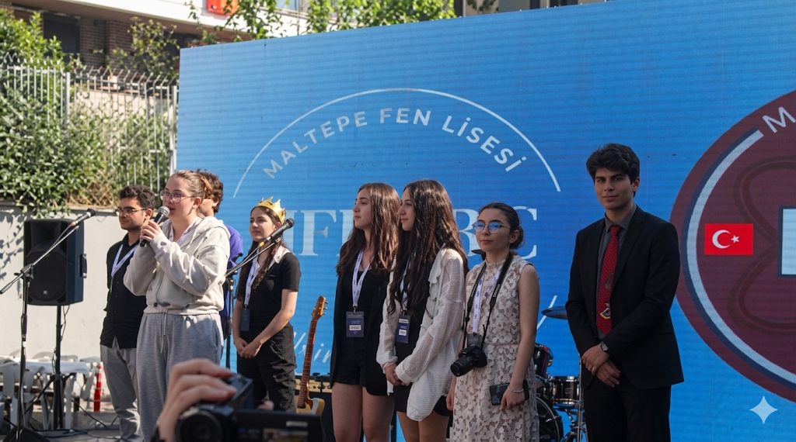
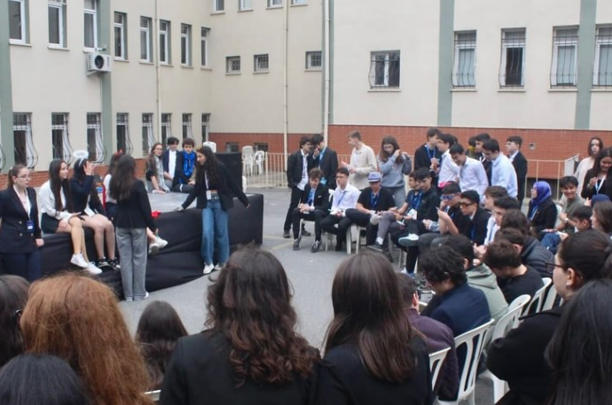